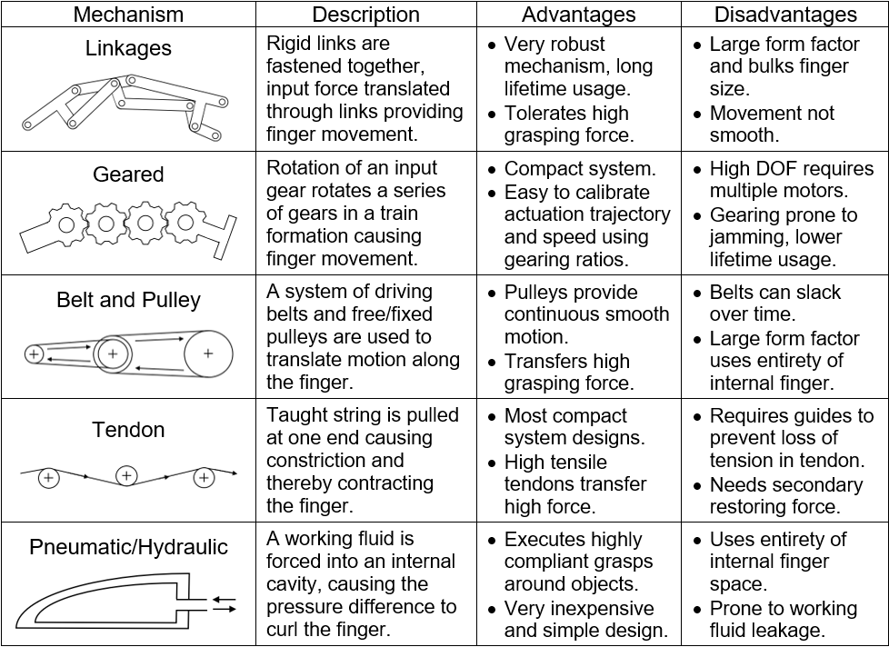
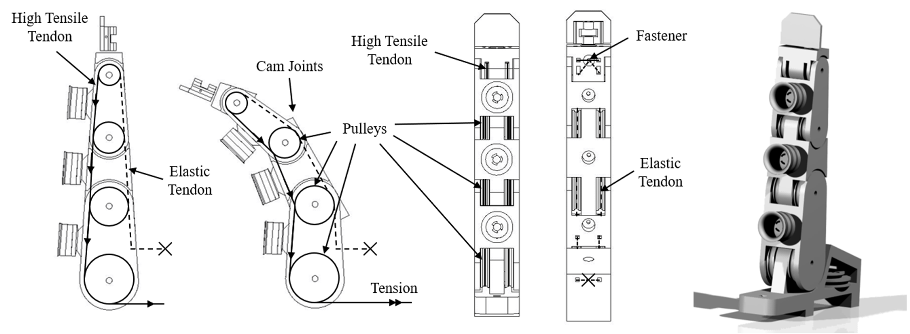
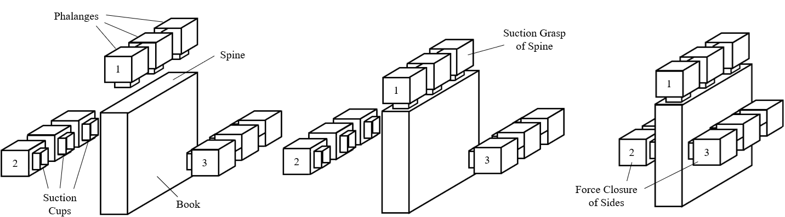
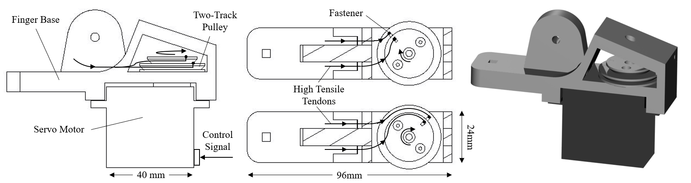
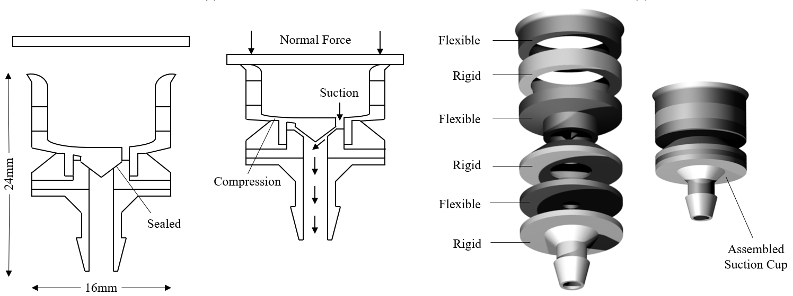
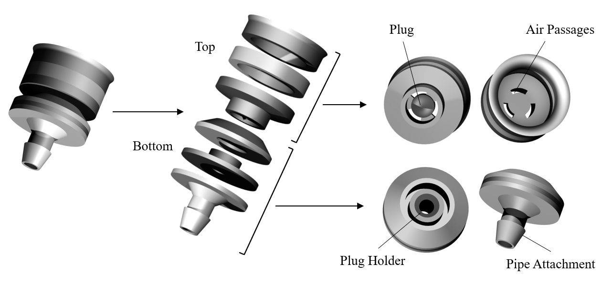
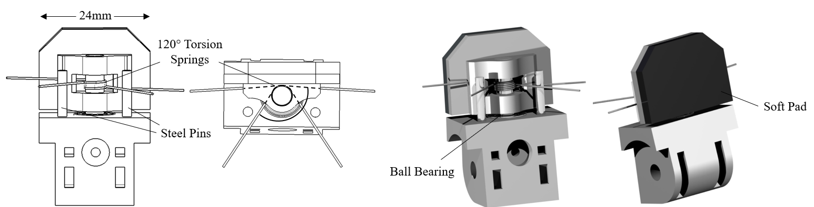
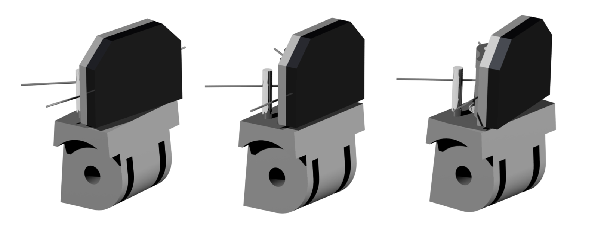
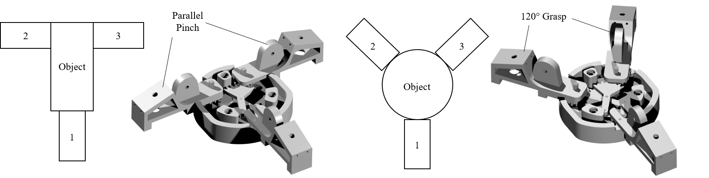
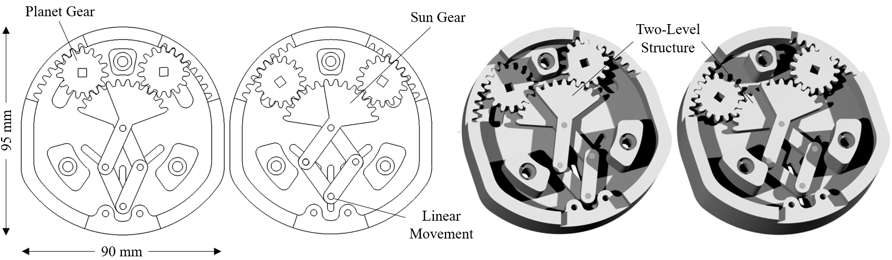

This work saw the identification and design of five features of an end-effector that uses both suction and fingered grasping, optimised for general-purpose tasking. The proposed design uses tendon actuation to provide underactuated fingered grasping and mechanically self-sealing suction cups. A linearly actuated planetary gearing mechanism is designed into the palm of the end-effector allowing rotation of two of the three fingers to accommodate a wider range of grasps. Finally, a novel fingertip mechanism is also devised to adapt to the contours of geometrically complex objects.
To decide on an appropriate finger mechanism, an assessment of various types of finger mechanisms was carried out as seen in the table below. An important consideration was the need to integrate a pneumatic system for the suction cups into each finger. As a result, the compactness of the design was a key constraint.
The final mechanism chosen used a combination of tendons and pulleys, this is detailed in schematic below. This allowed for the placement of three suction cups along each phalange and three degrees-of-freedom, therefore providing a compact solution with a wide range of motion. Moreover, the resulting design is also underactuated, meaning more degrees of freedom than actuators, which allows the finger to comply to the surface geometries of the object. This is optimal for allowing the suction cups to naturally position themselves on the object with a high-quality seal.
Key to operating the finger mechanism was devising an appropriate actuation system to apply tension to the tendons. End-effectors are frequently grouped into two categories: individually actuated fingers and simultaneously actuated fingers. Simultaneously actuation allows the use of a single actuator to contract all fingers in unison. Individual actuation often employs the use of multiple actuators, often one for each finger, allowing for more complex grasping strategies. The decision to use either approach is often dictated by the complexity of the end-effector’s application, simpler applications often opt for simultaneous actuation as it reduces design complexity and cost.
The ability for suction to reduce both translational and rotational degrees of freedom means a single finger can eliminate the wrenching forces of the grasped object. This allows for the remaining fingers to use force and form closure to completely secure the grasp. This is demonstrated on a book in the figure below, which prevents the spine or cover from dangling and getting damaged, a common occurrence noted in the 2017 Amazon Picking Challenge.
As a result of the novel grasping strategies that could be achieved, as illustrated above, the design opted for individual actuation thereby maximising the variety of objects that could be grasped. The choice of actuator had to allow for precise control and high holding force when powered off. Servo motors were chosen for these reasons and could be precisely controlled from an Arduino Uno using pulse width modulation.
The choice of suction cup is the most important factor in determining the performance of a suction grasping end-effector. Convention has been to use simple ‘below’ shaped cups as these designs provide flex and compliance around the objects surface, thereby providing tight seals. However, when multiple cups are used not all cups form seals with the object resulting in pressure losses and therefore a weak grasp. Solutions such as pressure-saving valves and regulators can be used to counter this but are often bulky and expensive.
Instead, a novel self-sealing suction cup design is proposed that prevents pressure loss by sealing the cup until it is in contact with an object. This design is largely based on work conducted by C. Kessens et al. in 2010 and 2016 on self-sealing suction cup arrays.
The design capitalises on the nature of force closure exerting a normal force on the lips of the suction cup and thereby compressing them. The compression actuates a small internal plug which exposes the object to the partial vacuum connected to the cups. This is achieved by fabricating the suction cup from layers of flexible rubber and rigid plastic material.
A feature often overlooked in end-effector design is the tip or distal. Commonly this part of the end-effector is either static or ignored to reduce the design’s complexity. Human hands utilise both the fat and bone structure of the fingertip and minor rotations of the finger to achieve high precision pinches. This allows the grasping of items with highly contoured surfaces. An example of such an object can be found in the 2017 Amazon Picking Challenge, where the majority of end-effectors failed to grasp sparkplugs due to its small form and highly contoured surface.
Consequently, the design aimed to mimic the mechanics of the human finger using a sprung tip to allow minor rotation and a soft material adhered to the rigid fingertip to mimic the fat and bone structure of the human finger. The resulting design can be seen in the figure below.
The rotation clockwise and anticlockwise as seen in the figure below is aided by the axle being grounded in a ball bearing. When the tip is pressed against a surface the normal force overcomes the stiffness of the torsion spring and the tip begins to rotate. Once released the compression of the torsion spring against the steel pins restores the tip to its idle position.
The number and orientation of fingers dictates the shapes of objects an end-effector is able to grasp. Two fingered parallel graspers are often seen in the simplest of applications, providing force closure grasping on flat surface but struggle on more geometrically complex objects. More advanced designs range from three fingers to anthropomorphic five fingered designs. Although more fingers might seem advantageous, often they add unwanted complexity and size to the end-effector.
Instead, three fingered designs have proven to be effective at grasping an ample number of objects without adding unnecessary complexity. A common pose chosen is a 120-degree separation of all fingers, this is optimal for grasping spherical objects but is less effective at grasping more cubic objects. Therefore, a mechanism is designed into the palm of the end-effector that orients three fingers to two distinct poses depending on which is optimal for the object being grasped, as seen in the figure below.
The design is achieved using a two-level planetary gear mechanism embedded into the palm of the end-effector. This mechanism is driven by a linear motion beneath the end-effector, the motion is translated through the linkage structure to a rotational motion that rotates and moves the planet gear. These gears are secured to the fingers using a square axle allowing the transition between possess, this is closely examined in the below figure.
